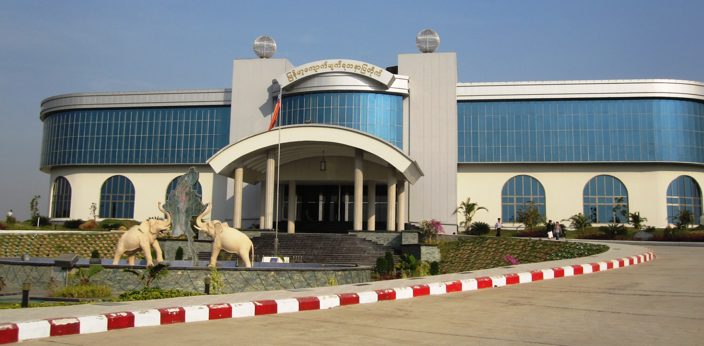
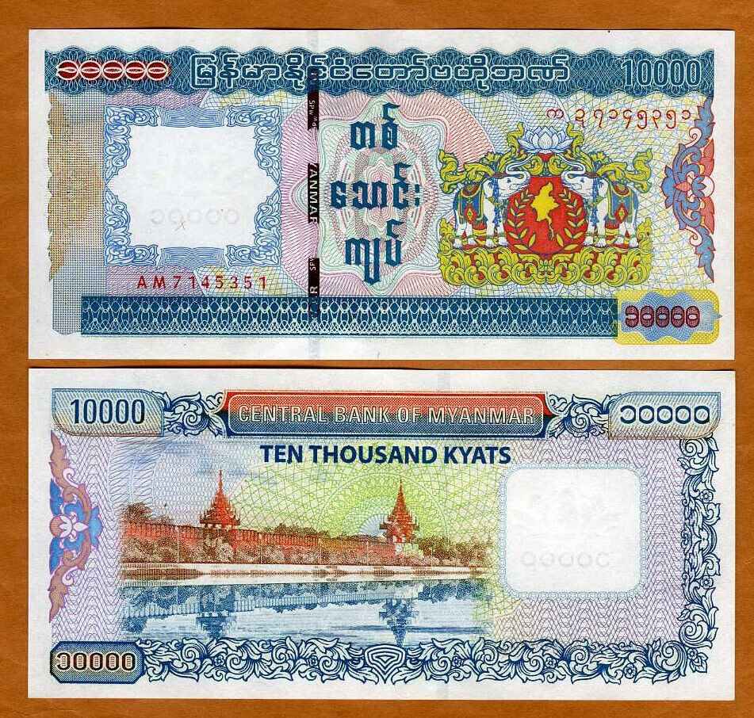

首都
2005年遷都のミャンマー計画都市ネピドー。「王の都」の意味を持ち、政府・軍施設や住宅地が整然と広がる。国会議事堂と巨大パゴダが象徴的。政治行政の中心だが商業は未発達で静謐な印象。
ネピドー
言語
ミャンマーの公用語ビルマ語は、声調を持つ孤立語で語順が重要。独自の丸い文字と豊富な敬語が特徴。仏教用語などの借用語も多い。近年、国際化で関心が高まる。

ビルマ語
通貨
現在のチャット（MMK）は、2021年の軍事クーデター以降、価値が大きく下落し不安定です。公式レートと闇レートに大きな差があり、インフレも深刻です。日常生活ではチャットが主に使われますが、米ドルも一部で流通しています。経済情勢の不安定さが通貨にも影響を与えています。最新レートの確認が重要です。
チャット（Kyat）